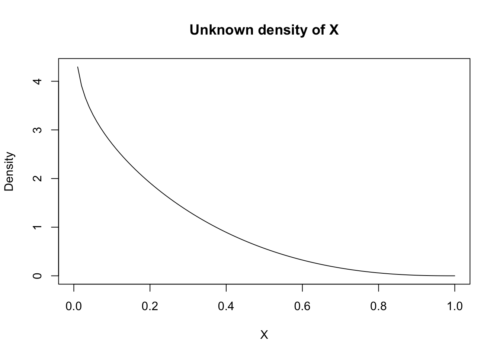
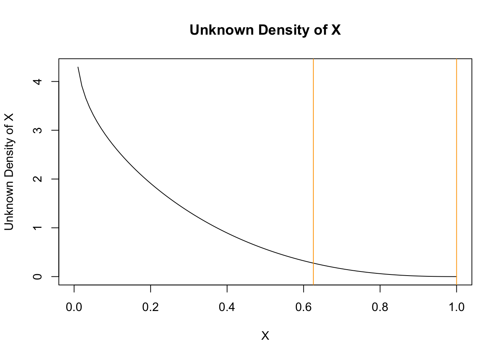
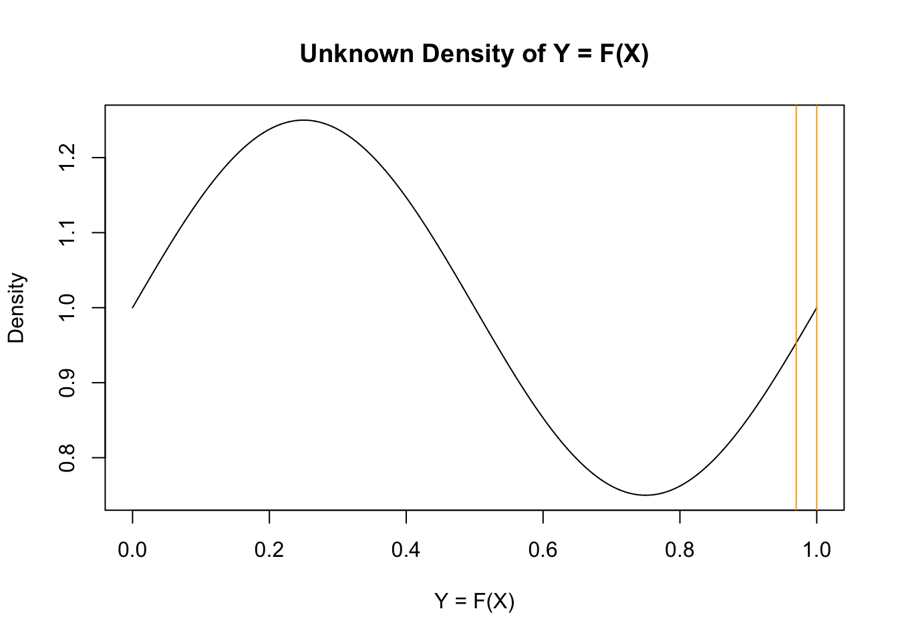
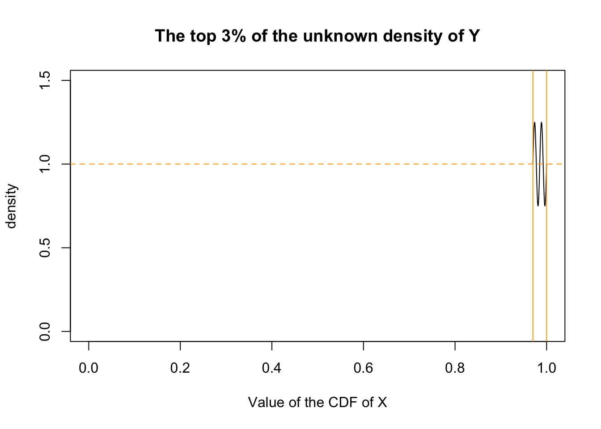

The probability integral transform states that, for a continuous random variable \(X\), the distribution of \(F_X(X)\) is \(U(0, 1)\). This result underlies inverse transform sampling. But why does this make sense?
Suppose we have a random sample x from some unknown probability distribution. What does \(F_X(x)\) look like?
Let’s try to draw the density of \(Y = F_X(x)\) one section at a time.
First, suppose we select the top 3% of the sample. By definition, this comprises the values between the \(0.97\) and \(1\) \(p\)-quantiles of this distribution.
Here is the density of \(X\).

For now, since we don’t know what the density of \(Y = F_X(X)\) looks like, let’s say it’s an arbitrary curve.

However, since we selected the top 3% of the probability mass, we know that, within the orange interval, the area under the curve must be \(0.03\), and therefore the value of the density must be \(1\) on average.

Now, think about the region between the \(0.97\) and \(0.98\) p-quantiles of the sample. By definition, this comprises 1% of the probability mass (\(0.98 - 0.97 = 0.01\)), so we need to adjust our curve to satisfy this condition.
However, we note that all intervals have this same property (even arbitrarily small intervals). It should be natural to suspect the density of curve of the CDF-transformed sample to be a horizontal line at \(1\): this is the only function I can think of that guarantees this property. It feels like this can be proven more formally using real analysis.
Lemma: For all real numbers \(a, b\) such that \(0 \leq a < b \leq 1\), \(F_X(X) \sim \text{Uniform}(0, 1)\).
Informal mathematical argument:
Let \(a, b\) be real number such that \(0 \leq a < b \leq 1\).
By the argument above, we have \(F_Y(b) - F_Y(a) = b - a\).
(Note that we can rewrite this as \(F(b) = b \text{ and } F(a) = a\), i.e. \(F\) is the identity.)
We have:
\[ \begin{align} F_Y(b) - F_Y(a) &= b - a\\ &= F_Y(Y) \Big|_a^b && \text{(standard antiderivative notation) }\\ &= \int_a^b f_Y(y)dy && \text{(definition of a probability density function)}\\ &= \int_a^b 1dy && \text{(a function with the identity as its antiderivative)}\\ \end{align} \]
So, we have \(f_Y(y) = 1\), and therefore, \(Y = F_X(x)\) has the standard uniform distribution.